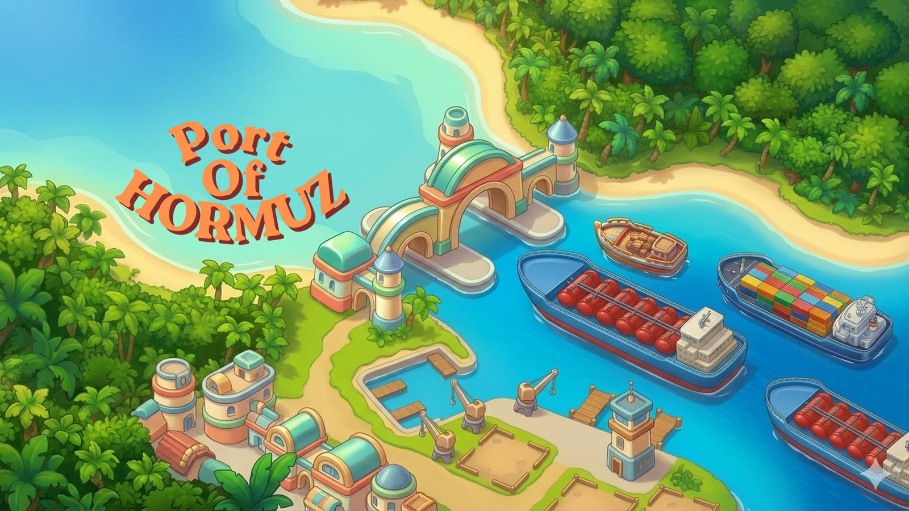

Port of Hormuz
A real-time ship-triage game for the web
Play it on itch.io
What it is
Port of Hormuz is a real-time triage game. You run the gate of a busy shipping strait, and the ships keep coming. Your whole job is to sort them, fast: clear it through, pull it in to inspect, or divert it away. One clean decision, made over and over.
Early on you have room to think. As the waves build, ships arrive quicker and dirtier, and the same call gets harder. The game is really about staying sharp while the rate climbs — quick triage that scales until it breaks you.
Why a web game
The biggest lesson from building Bowldem was that making the game is the easy part. Distribution is the hard part. So this time I built for the web first: it runs in any browser, nothing to install, and it's the same build everywhere.
It's live now on itch.io, where anyone can play it in the browser. Poki and CrazyGames are the next experiments — bigger portals that bring their own audiences and rules. Building web-first keeps the same build portable across all of them instead of betting the whole thing on one channel.
Why this game
It's also topical. The strait it's named after sits in the middle of the news cycle, and when I went looking for prior art I couldn't find many ship-triaging games. The lane felt open: a familiar mechanic — sort the queue under pressure — pointed at a setting nobody had really used.
How it works
Ships approach the gate in waves. Clear a clean ship and it pays into your treasury. Wave a dirty one through, or stop traffic you shouldn't have, and it costs you a life — three lives and the run ends.
The payoff beat is the inspection. Catch a ship carrying something it shouldn't and the seizure pays out big: the screen freezes for a moment, gold bursts, and the win lands before play resumes.
The build
This is the first real-time game I've built for the open web. React 19 and Vite handle the shell, but the game itself runs on a hand-written canvas loop — ships, waves, economy, and the moment-to-moment feel all live in a single tick. Shipping to CrazyGames and Poki meant building to each portal's SDK and rules: save systems, ad timing, pause behavior, mobile and desktop.
Status: Live on itch.io — playable in any browser
Tech Stack: React 19, Vite, TypeScript, HTML5 Canvas